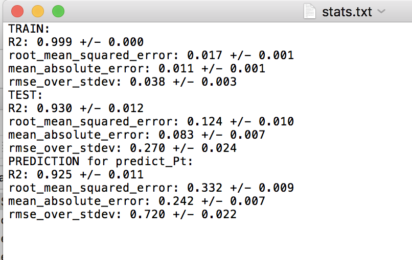
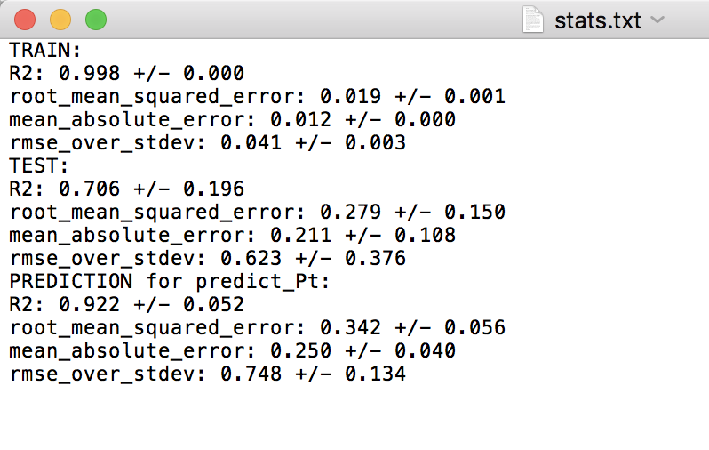

Predicting values for new, extrapolated data¶
As a final example, we are going to use our model to predict the migration barriers for those data points with Pt as the host element. Your data file already has a column with the title “predict_Pt”, with values equal to 0 in all rows except where Pt is the host, in which case the value is 1. In the GeneralSetup section of your input file, add the parameter validation_columns, and have it equal to “predict_Pt”, as shown below. This will make it so that the data with Pt as the host element will never be involved in the model training. This feature is a convenient way to isolate part of your data, or some new part of your data, to only function as a validation data set. This way, whenever a model is trained and tested on the remaining data, an additional prediction will also be calculated, which here is for the Pt host data.
Example:
[GeneralSetup]
input_features = Auto
target_feature = Reduced barrier (eV)
randomizer = False
metrics = Auto
not_input_features = Host element, Solute element, predict_Pt
grouping_feature = Host element
validation_columns = predict_Pt
For this test, let’s run both the random cross-validation and LOG test. As a reminder, we need to un-comment the random cross-validation test in the DataSplits section:
Example:
[DataSplits]
#[[NoSplit]]
[[RepeatedKFold]]
n_splits = 5
n_repeats = 2
#[[RepeatedKFold_learn]]
# n_splits = 5
# n_repeats = 2
[[LeaveOneGroupOut]]
grouping_column = Host element
When running this test, you’ll notice there are fewer splits in the LOG test folder now. This is because Pt is only treated as a final “validation” or “extrapolation” data set, and is never involved in the training or test set in any split. For each split in the random and LOG CV tests, there is a “stats.txt” file which is written, which provides the average train, test and prediction results. The prediction results are for the Pt validation data. Below are screenshots of the stats.txt file for the random and LOG tests.
Random cross-validation:
LOG cross-validation:
For the random cross-validation, the R-squared and error values are higher for the predict_Pt dataset compared to the average of the testing datasets. This is to be expected, as Pt is never involved in model training. Further, we can see that the predictions for predict_Pt are slightly worse in the case of the LOG cross-validation test compared to the random cross-validation test. This also makes sense, as each training split of the LOG test tends to result in worse predictive performance (i.e. worse model training), relative to the random cross-validation case, as discussed in the above test when we compared the results of the random and LOG cross-validation tests.
This concludes the MAST-ML tutorial document! There are some other features of MAST-ML which were not explicitly discussed in this tutorial, such as forming data clusters. Consult the MAST-ML Input File section of this documentation for a more in-depth overview of all the possible options for different MAST-ML runs.